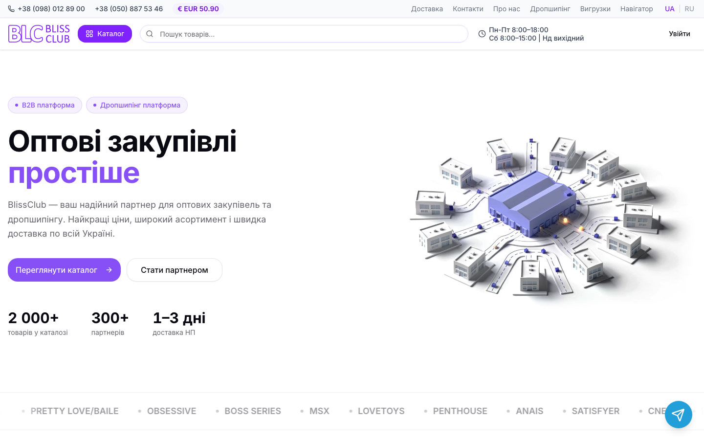
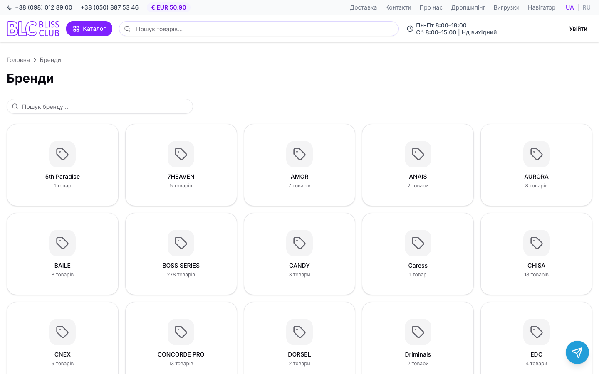
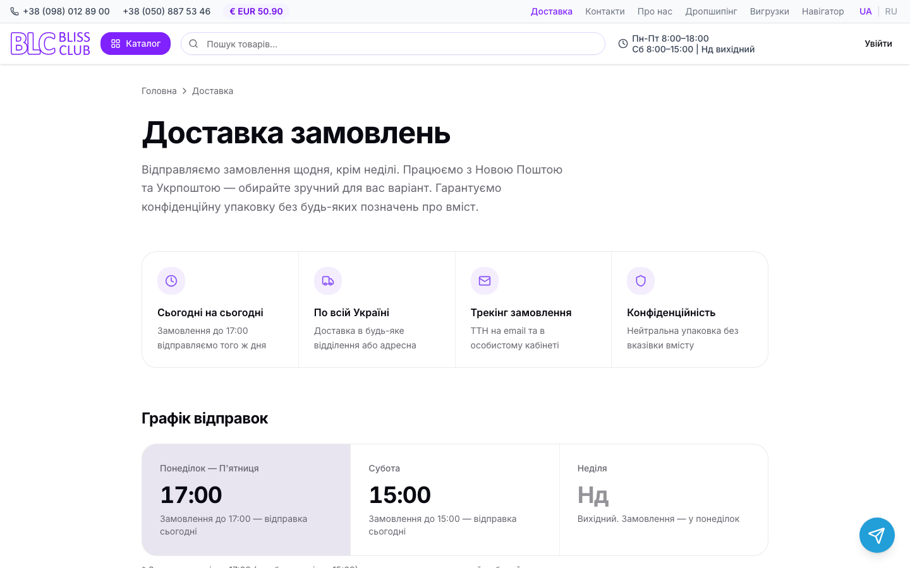
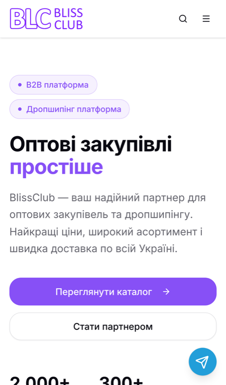
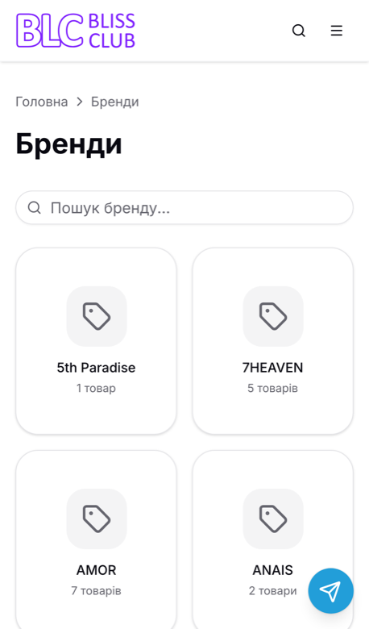
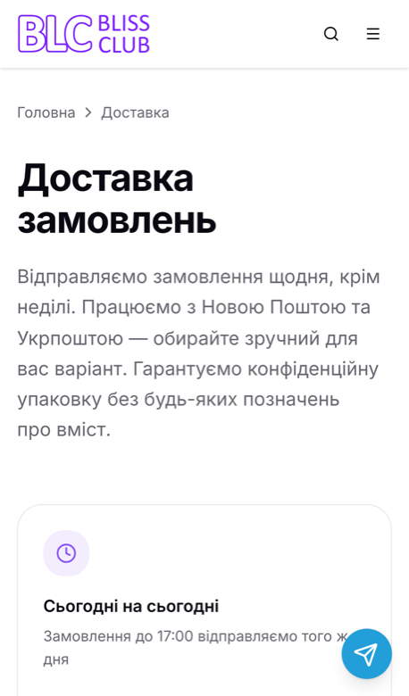

Роблю лендинги й невеликі сайти, виправляю чинні сайти та перевіряю їх зі списком проблем. Пишу письмово, здаю з інструкцією перевірки й чесним звітом про те, що перевірено, а що ні.
I build landing pages and small sites, fix existing ones, and review sites with a clear list of issues. I work in writing and hand over with a check guide and an honest report of what was and was not verified.
Agreed structure, responsive layout, a contact form that actually delivers messages, basic metadata, deployment.
Правки чинного сайту
Fixes to an existing site
Адаптивність, верстка, форми, окремі помилки інтерфейсу, невеликі погоджені функції. У окремій гілці, без перепису всього.
Responsive issues, layout, forms, individual UI bugs, small agreed features. In a separate branch, without rewriting everything.
Перевірка сайту
Site review
Список проблем з відтворенням кроків і пріоритетами; виправлення — окремо, за погодженням. Це не аудит безпеки.
A list of issues with reproduction steps and priorities; fixes are agreed separately. This is not a security audit.
Простий сайт-каталог
Simple catalog site
Погоджені сторінки й обсяг, пошук і фільтри за чіткими вимогами. Платежі та складні інтеграції — лише після окремої оцінки.
Agreed pages and scope, search and filters per clear requirements. Payments and complex integrations only after a separate estimate.
Умови, строки й ціна узгоджуються письмово під кожну задачу: обсяг, критерії приймання, кількість раундів правок, схема оплати.
Terms, timeline and price are agreed in writing for each task: scope, acceptance criteria, number of revision rounds, payment schedule.
Кейс: Bliss Club — B2B-платформа оптових поставок
Case study: Bliss Club — B2B wholesale platform
Український оптовий постачальник працює з сотнями магазинів-партнерів. Потрібна була єдина система: партнер бачить свої ціни, залишки й баланс та оформлює замовлення; компанія керує каталогом, знижками й обліком без ручного перенесення даних. Я — власник і розробник продукту; працював із AI-асистентом Claude Code, а вимоги, рішення й перевірка поведінки — мої. Сайт: bliss-club.com.
A Ukrainian wholesale supplier works with hundreds of partner shops. They needed one system: a partner sees their own prices, stock and balance and places orders; the company manages the catalog, discounts and accounting without copying data by hand. I am the owner and developer of the product; I built it with the AI assistant Claude Code, while requirements, decisions and behavior checks are mine. Site: bliss-club.com.
Що реалізовано (підтверджено кодом)
What was built (confirmed by code)
Кабінет партнера: замовлення, адреси, баланс і оплати; ціни й залишки лише для авторизованих (перевірка на сервері).
Каталог із пошуком і фільтрами, індивідуальні та групові знижки, інтерфейс українською й російською, мобільна адаптація.
Адмін-панель із ролями доступу: замовлення, товари, бренди, партнери, статистика, ревізія складу за штрихкодами.
Синхронізація з обліковою системою Dilovod, доставка Новою Поштою, автоматичні вигрузки каталогу для маркетплейсів.
Telegram-бот для партнерів; фонові задачі за розкладом; деплой з миттєвим відкатом.
Partner account: orders, addresses, balance and payments; prices and stock only for signed-in users (enforced on the server).
Catalog with search and filters, personal and group discounts, Ukrainian and Russian interface, mobile-friendly layout.
Admin panel with access roles: orders, products, brands, partners, statistics, warehouse stocktake by barcode.
Sync with the Dilovod accounting system, Nova Poshta delivery, automated catalog exports for marketplaces.
Partner Telegram bot; scheduled background jobs; deployment with instant rollback.
Codebase size: ≈95k lines of TypeScript, 168 server routes, 81 database migrations, 611 commits (Jan–Oct 2026).

Головна, комп'ютерHome, desktop

Бренди з пошукомBrands with search

Умови доставкиDelivery terms

Головна, телефонHome, phone

Бренди, телефонBrands, phone

Доставка, телефонDelivery, phone
Чесні обмеження: у проєкті немає автоматичних тестів, перевірка велася вручну. Результати бізнесу (продажі, конверсія) я не заявляю. Закриті розділи (каталог із цінами, кабінет, адмінка) публічно не показую.
Honest limits: the project has no automated tests; checks were done by hand. I do not claim business results (sales, conversion). Private areas (priced catalog, account, admin) are not shown publicly.
Як я працюю
How I work
Спочатку короткий бриф і критерії приймання, потім робота невеликими перевірюваними частинами.
Спілкуюся письмово; дзвінки й відеозустрічі не проводжу.
Кожна здача: посилання на перегляд, кроки перевірки, фактичний звіт «пройдено / не перевірено», відомі обмеження.
Користуюся AI-інструментами й кажу про це прямо; кожну зміну перевіряю й відповідаю за результат.
Нові вимоги оцінюються окремо; без прихованих змін і без залежності сайту від мого акаунта.
A short brief and acceptance criteria first, then work in small, verifiable parts.
I communicate in writing; I do not do calls or video meetings.
Every handover: a preview link, check steps, a factual "passed / not verified" report, known limitations.
I use AI tools and say so openly; I check every change and stand behind the result.
New requirements are estimated separately; no hidden changes, and the site never depends on my personal account.
Контакт
Contact
Опишіть задачу двома-трьома реченнями: що потрібно, для кого і до якої дати. Я відповім із уточненнями та орієнтовною оцінкою.
Describe the task in two or three sentences: what you need, for whom and by when. I will reply with questions and a rough estimate.